最高の仲間たちと駆け抜けた、3日間の奇跡の軌跡。
仁淀ブルーの圧倒的な美しさと、爽やかな風を感じながらペダルを漕いだ
あの日の思い出を、動画と写真で振り返りましょう。
お知らせ: iPhoneのSafariなどで動画が暗くなって再生できない場合は、動画の下にある「別画面で再生する」ボタンからご覧ください。
ハイライトムービー
～DAY1🚴～
旅の始まり、中津渓谷へ
2026年5月29日
空路で高知龍馬空港へ！期待を胸に降り立った高知の空は快晴でした。大渡ダム公園から、いよいよ待ちに待ったサイクリングがスタート。色鮮やかに満開を迎えたツツジが私たちを歓迎してくれました。
快適な走りで、最初の目的地である「中津渓谷」を目指してスイスイと進みます。初めて目にした「仁淀ブルー」の圧倒的な美しさに、全員が息を呑んだ感動の1日目でした。
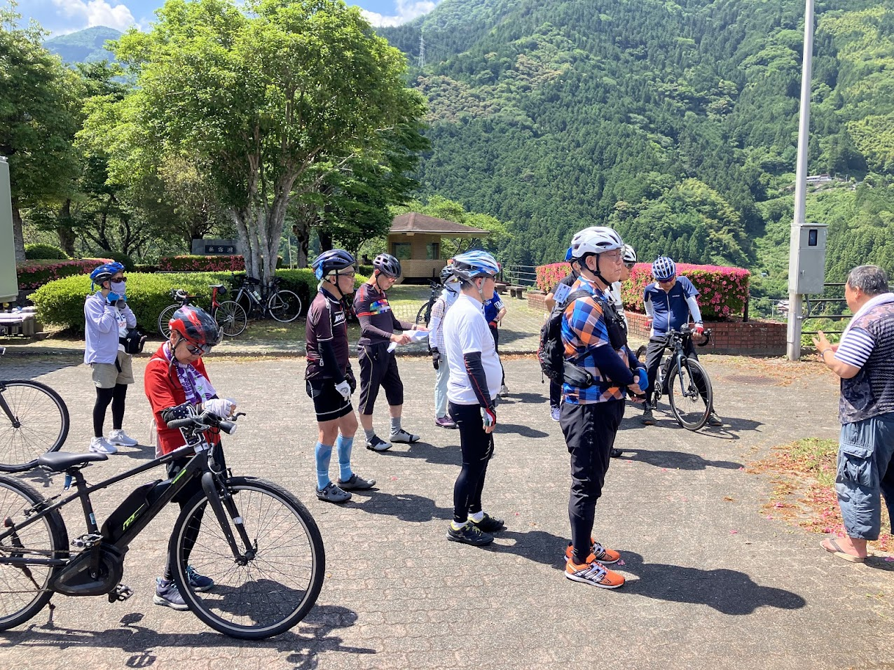
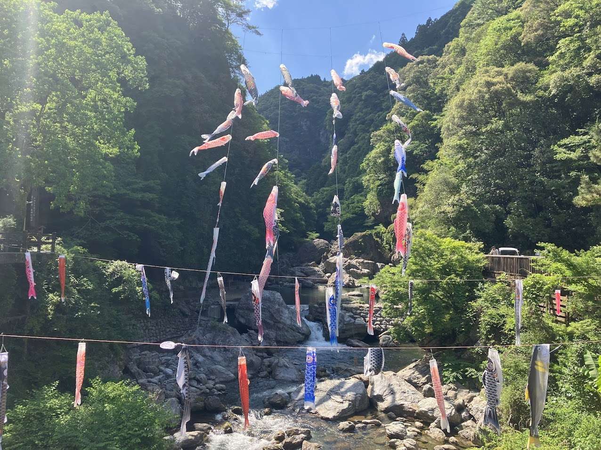
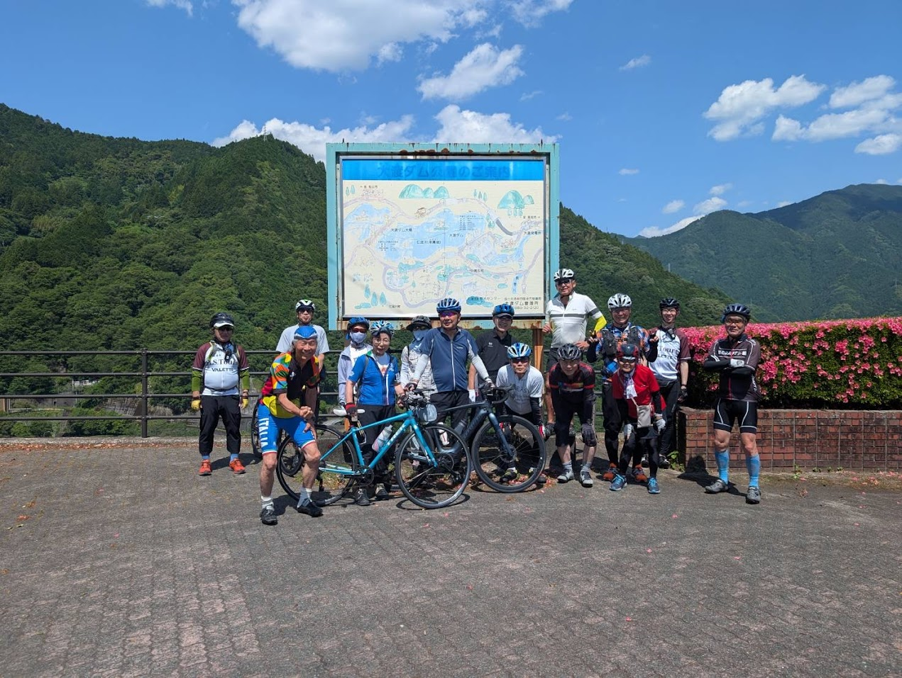
～DAY2🚴～
沈下橋と仁淀ブルーを満喫
2026年5月30日
2日目も雲一つない素晴らしい快晴！今日は仁淀川の象徴とも言える「浅尾沈下橋」を目指してペダルを漕ぎ進めます。
木漏れ日が差し込む林道や、川沿いの道を走り抜けるサイクリングは最高に気持ちよく、自然と仲間との会話も弾みました。透明度抜群の仁淀川を横目に眺めながらのライドは、まさに「奇跡の清流」を全身で体感する贅沢な時間となりました。
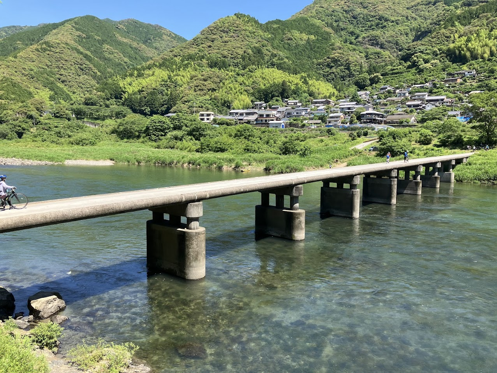
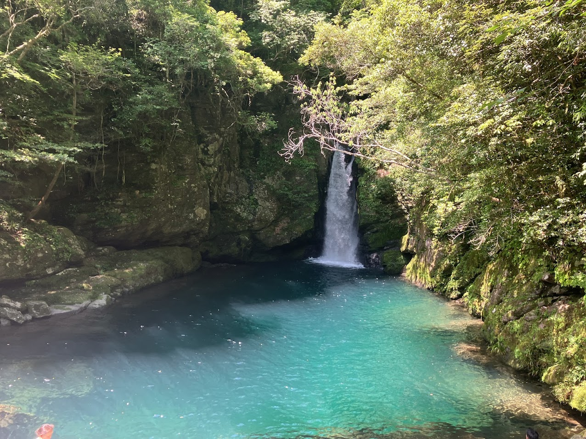
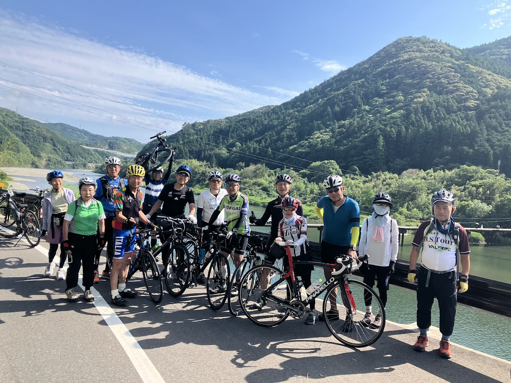
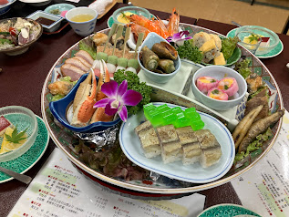
～DAY3🚴～
海岸線から桂浜へ
そしてゴール
2026年5月31日
最終日は少し雲が出ましたが、その分涼しくて走りやすい絶好のサイクリング日和。地のもん市場ハレタを出発し、仁淀川沿いをひたすら走り、太平洋側へと抜けます。
高知海岸の雄大な景色と波音を横目に、桂浜で休憩。そしていよいよ最終ゴールの竜馬の湯に向かってラストスパート。3日間、大きな事故もなく旅を終えた笑顔は、一生忘れられないかけがえのない思い出となりました。
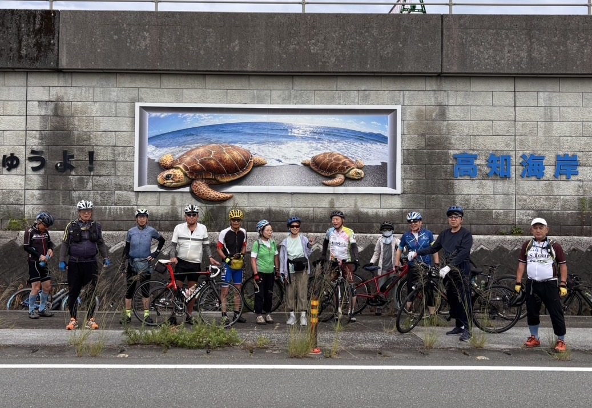
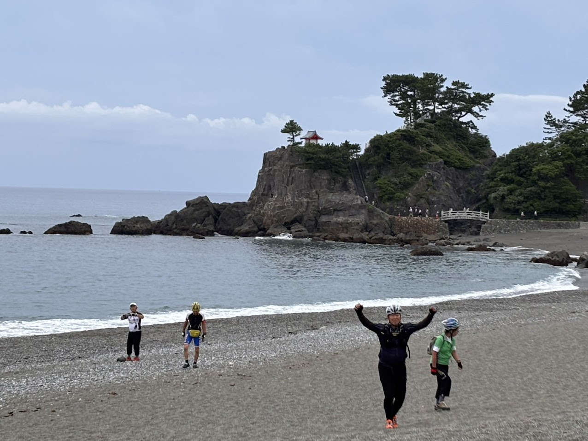
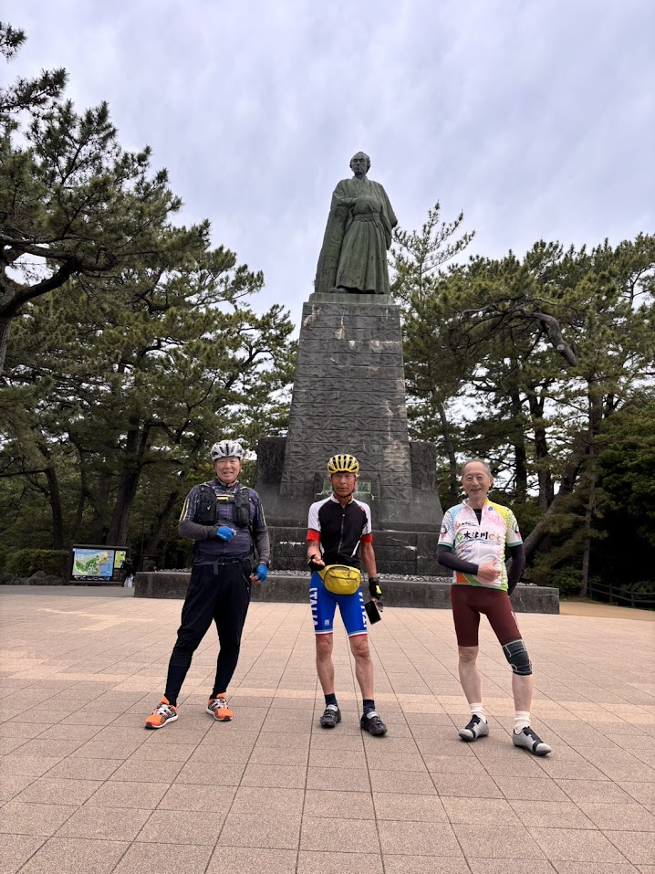
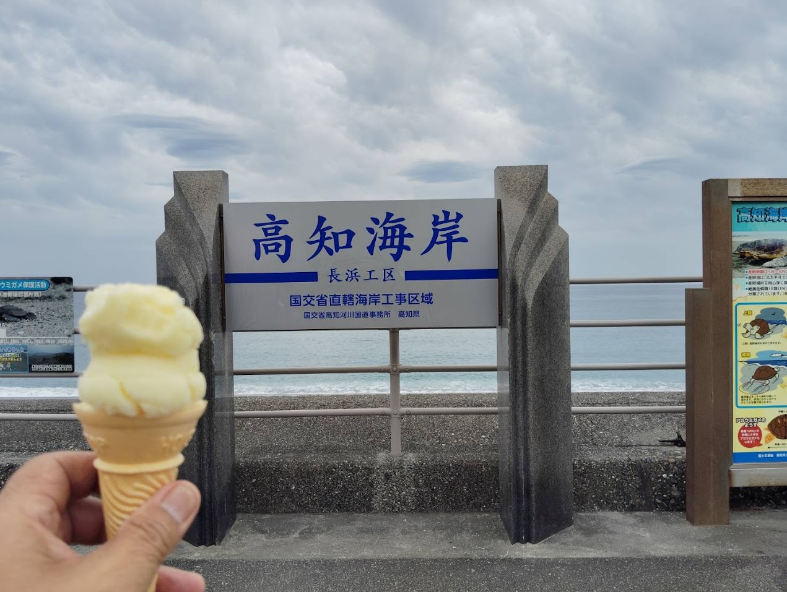